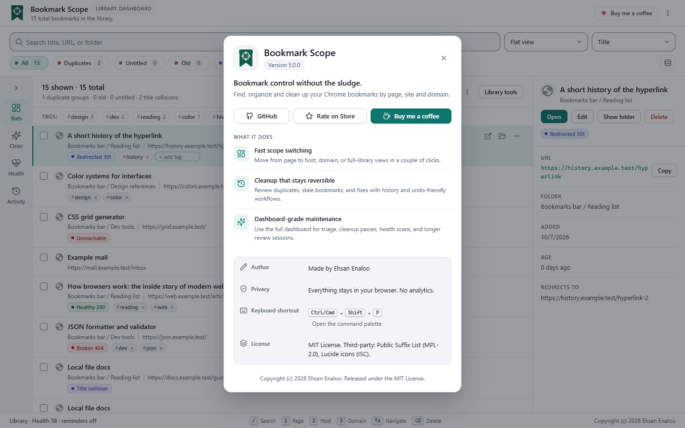
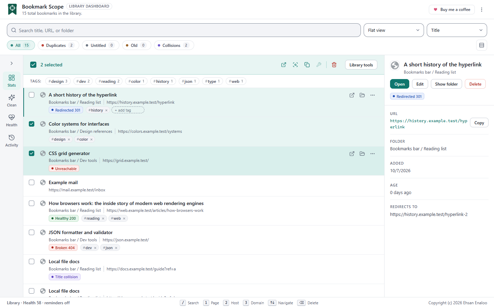
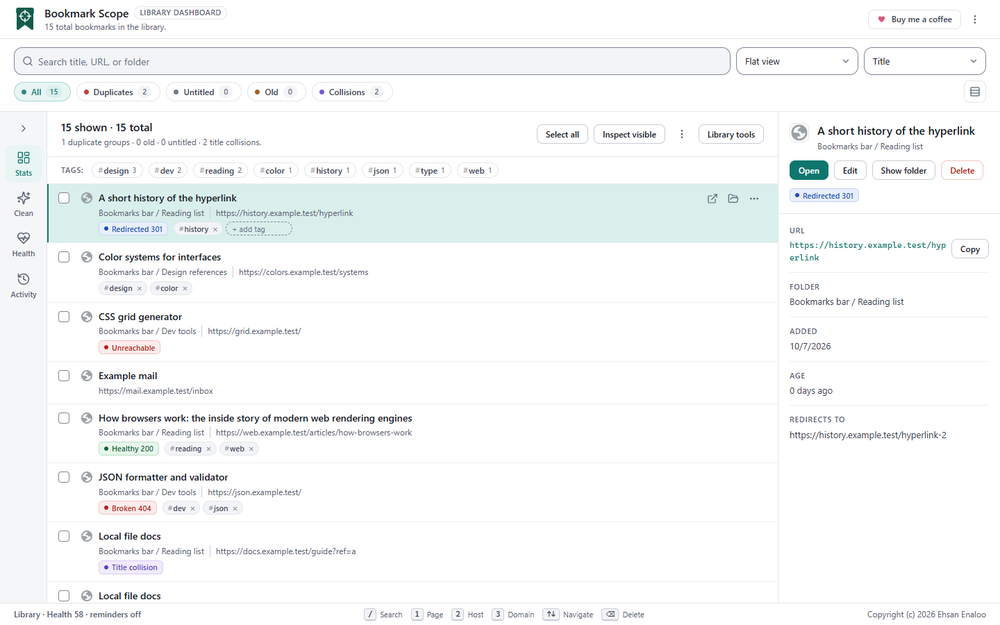
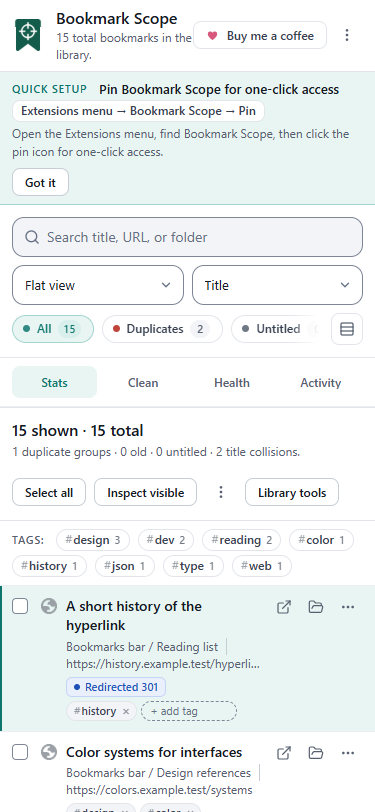

Opening it#
- From the popup, choose Dashboard.
- From the right-click menu entries (see the popup guide), which open it already narrowed to a site.
Unless it was opened from a right-click entry, the dashboard starts on your entire library. It loads your saved filters and grouping, restores cached link-health results (cache entries older than seven days are ignored) and refreshes itself when bookmarks change in Chrome, in the popup, or in another window.
The header#
- The title and a count: N total bookmarks in the library.
- Buy me a coffee, which opens the project’s support page.
- The More actions menu: About, Open Chrome bookmarks, Settings, and theme and colour-palette controls.

On first run a Quick setup card explains how to pin the extension. Got it dismisses it permanently.
The toolbar: search, grouping, filters, density#
- Search box
- Placeholder Search title, URL, or folder. Supports operators; see Finding and searching. Press / to jump to it.
- Grouping selector
- Flat view, Group by domain, Group by folder, Group by status.
- Sort order
- Next to the grouping selector (accessible name Sort visible bookmarks): Title, URL, Newest, Oldest, Folder path. It orders the flat list, or the bookmarks inside each group. The choice is remembered and saved views include it.
- Group order
- Appears only when grouped and orders the groups themselves: Default order, Largest first, A → Z.
- Filter chips
- All, Duplicates, Untitled, Old, Collisions, each with a count for the whole library. One chip is active at a time.
- Density toggle
- Switch to compact density and back. It affects the current session only; it is not saved.
The side rail and its four panels#
A narrow rail on the side has four buttons, Stats, Clean, Health and Activity, and a collapse button. By default the rail is collapsed to icons and a panel opens as a flyout over the list when you click a button. Your collapse choice is saved. On wide windows you can expand it so the panel sits beside the list.
| Panel | What it shows | What you can do |
|---|---|---|
| Stats (Overview) | Library size, health score, number of checked links, a “Priority” count (broken, server-error, unreachable and redirected links), and up to two recommendations | Click a recommendation button, for example Review duplicates or Inspect visible links |
| Clean (Cleanup) | Counts of duplicate URLs, old and untitled bookmarks | Quick filters: Duplicates, Old, Untitled, Collisions |
| Health | How many links are checked, redirected and unhealthy, and the next review time | Inspect visible (or Inspect selected), Mark reviewed now |
| Activity | Recent actions: count of actions, redirects fixed, imports, deletes, and the five latest entries | Read only |
The health score
The score is a quick, rough indicator, not a verdict. It starts at 100 and subtracts capped penalties for the share of problems in the current library or scope:
| Problem | Largest possible deduction |
|---|---|
| Broken, server-error or unreachable links (among links you have checked) | 35 |
| Redirected links (among links you have checked) | 12 |
| Duplicate groups | 18 |
| Old bookmarks | 16 |
| Untitled bookmarks | 10 |
| Title collisions | 9 |
Grades: A is 90 or above, B is 80–89, C is 70–79, D is 55–69 and F is below 55. Until you have checked links, the score is labelled metadata-only, because it can only judge duplicates, age and titles. The footer shows the same score.
Activity history
Bookmark Scope keeps a short log of its own actions (health scans, deletes, undo, redirect repairs, moves, mark-reviewed, clearing the cache and bookmarking the current page). It keeps the latest 60 entries. This is a local log, not a backup of your bookmarks.
The list header#
- A summary such as 12 shown · 480 total and the cleanup counts for the view.
- Select all / Clear all.
- Inspect visible (Inspect selected when something is selected). See Link health.
- A More actions menu: Export visible (JSON), Export visible as CSV, Import bookmarks…, group expand/collapse items when grouped, and Clear cached health data.
- Library tools, which opens the maintenance dialog (snapshots, duplicate preview, saved views, bulk tags, resumable scan, import, diagnostics). If a scan is paused, a Saved scan progress button appears next to it.

The list#
Each row shows a favicon, the title, the host, the folder path (when it is not just the root), the full address, badges for cleanup issues and link health, any tags, and three buttons: Open bookmark, Show in bookmarks and More actions (Edit, Repair redirect, Delete).
The list follows the Sort visible bookmarks control in the toolbar, which defaults to title A–Z and is kept between visits. The popup has its own sort setting (see Popup); the two are independent.
Grouping
- By domain uses the registrable domain (
example.com). - By folder uses the full folder path.
- By status puts each bookmark in the first category that applies, in this order: Duplicates, Old bookmarks, Untitled, Title collisions, Clean bookmarks. It groups cleanup status, not link health.
Each group header has a collapse toggle, a count, small badges (duplicates, unhealthy, redirected, old), and the buttons Select group, Inspect this group and Open group.
Selection
Tick a row’s checkbox, press Space on the active row, use Select all, or press Ctrl+A (Cmd+A on Mac). Select all always means every bookmark in the filtered view, not only the rows currently drawn on screen.

The selection bar shows N selected and icon buttons (hover or listen to their names) Clear all, Open selected, Inspect selected, Copy URLs, Repair redirected (only enabled when a selected bookmark has a repairable redirect) and Delete. Tools that act on “selected or visible” bookmarks, such as Bulk tags and Resumable scan, use the selection when there is one and otherwise use everything visible, and say which in the dialog.
The detail panel#
Click a row, or move with the arrow keys, to make it active. The detail panel shows the active bookmark.

- Title, folder path and badges.
- Open, Edit, Show folder, Delete.
- The full address with a Copy button.
- Folder, Added, Age, and, after a link check, Redirects to and Health note.
Editing changes the title and address in place, so the bookmark keeps its ID, folder and position. The address must be a valid http or https URL; an empty title becomes (Untitled bookmark). Save with the Save button or Ctrl+Enter; cancel with Esc.
The list is virtual#
When a flat list has more than 150 rows, Bookmark Scope draws only the rows near the viewport and keeps the scrollbar sized for the whole list. That is why a library of thousands of bookmarks stays responsive. Practical consequences:
- Use search, filters or grouping to reach a bookmark; do not rely on the browser’s own find-in-page (Ctrl+F) to see rows that are scrolled out of view.
- Select all and the maintenance dialogs work on the full filtered set, not just the drawn rows.
- Grouped views draw each expanded group in full.
Narrow windows#
On smaller screens the header wraps, the side panels open as a flyout over the list, and the controls stack. Everything stays available; it is only rearranged.

Footer#
The footer repeats the library health line (and the reminder status) and lists the main keyboard shortcuts. The full list is in Command palette and keyboard shortcuts.